Fashion of the 20th Century
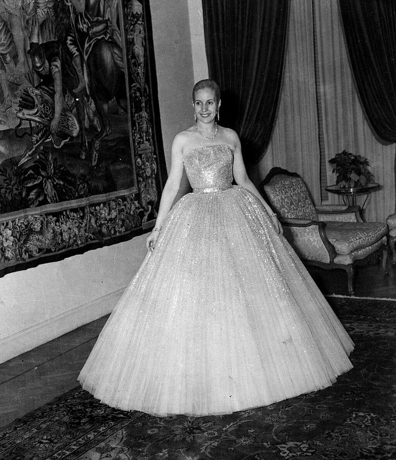
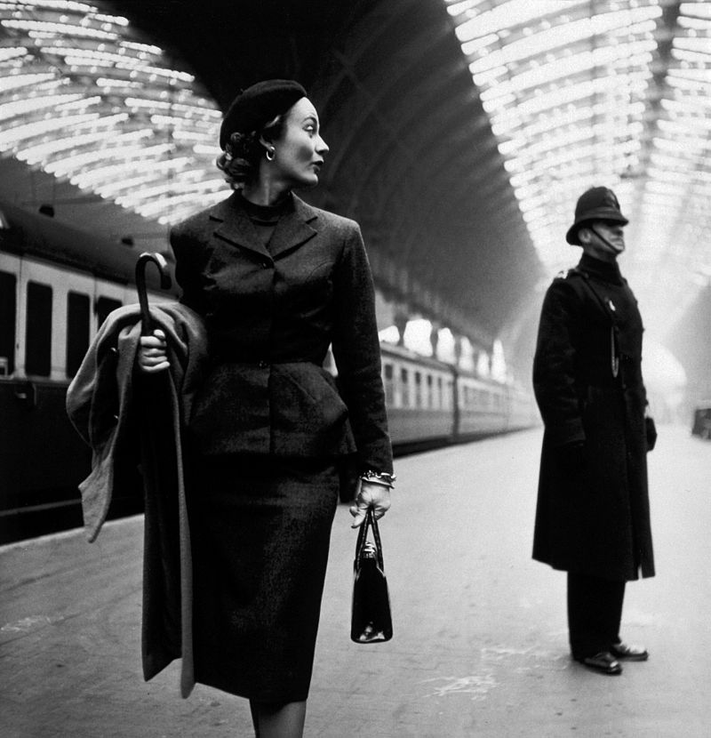
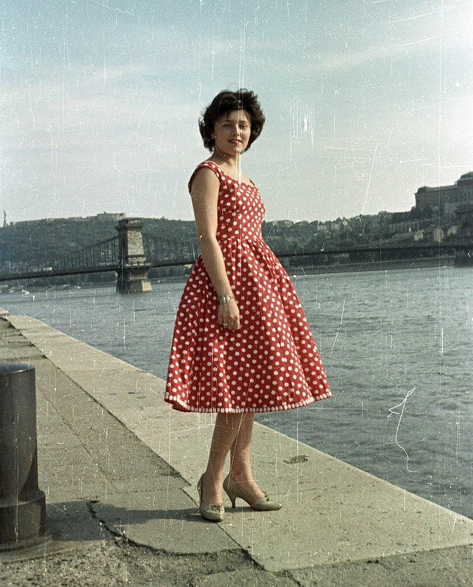
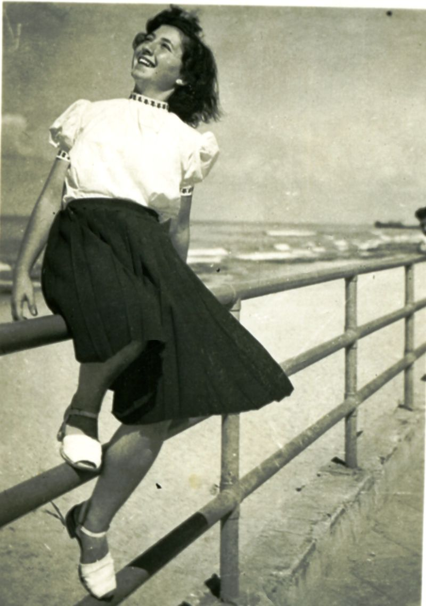
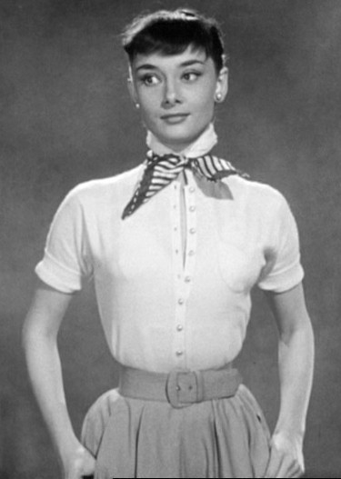
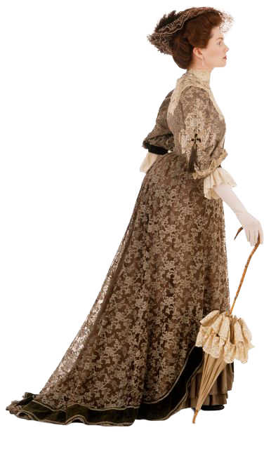
1900
The S-bend corset was fashionable during the 1900s. It thrust the hips backwards and forced the chest forward into a fashionable pouter-pigeon shape, emphasised with puffed, frilly blouses that were often embellished with decorations like lace collars and broad ribbon ties. Separates were popular, with skirts fitted over the hip and fluted towards the hem. Hair was worn in a centre parting, often looped around pads and false hair to create a wide 'brim' of hair around the hairline.
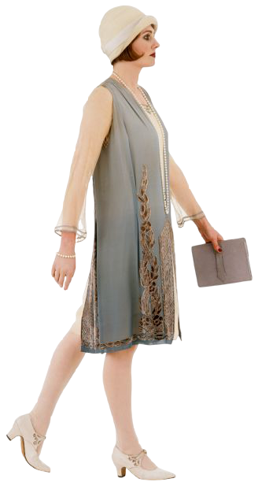
1920
During the early 1920s, couture houses embellished evening dresses with embroidered and beaded decoration in Chinese style or like that in Russian peasant tradition. In direct contrast, fashion in the 1930s saw a move towards a more feminine silhouette, with bias-cut clothes in smooth fabrics emphasizing the natural contours of the body.
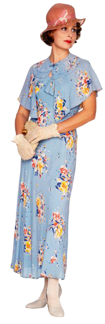
1930
The late 1930s witnessed a move away from this body-skimming line in favour of historically inspired corsetted dresses with crinolines and bustles for evening wear. This trend can be seen in Molyneux's pale-pink ribbed-silk evening dress of 1939 which has a double-tiered full skirt held out by four bone hoops.
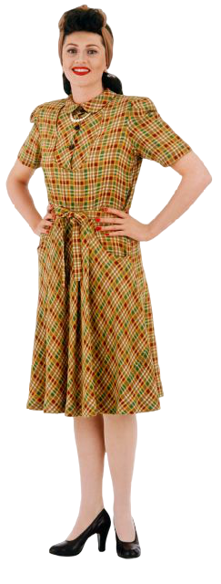
1940
In 1947 Christian Dior launched his New Look collection which, in direct contrast to wartime clothing, revelled in the unashamed luxury and corsetted styles of the late 19th century. His `Bar' suit from the spring of 1947 in cream silk tussore and fine black wool crepe is made to fit a tiny 45.5cm corsetted waist and exploits just under 7.5m of fabric in the skirt alone.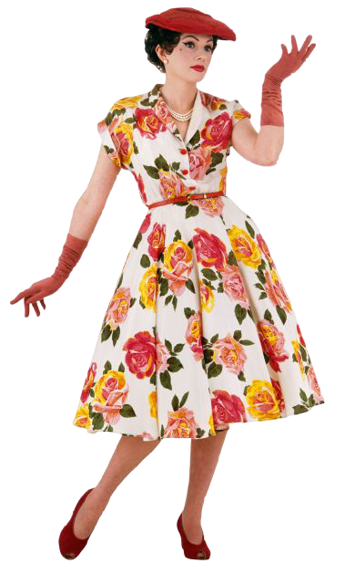
1950
By 1950 revivalist styles, so evident in women's fashions, also invaded the most exclusive levels of menswear. The smart single-breasted grey wool `Edwardian' suit from 1951 - bowler hat, fitted jacket and tapered trousers worn with waisted overcoat and velvet collar - reveals this brief trend. This was to become the source for Teddy boy street styles.
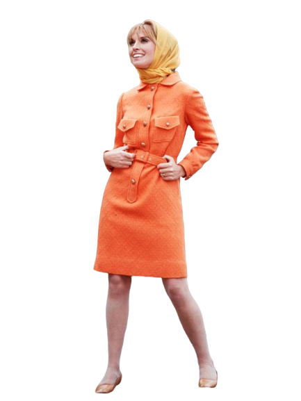
1) The lady-like elegance inherited from the previous decade seen on the likes of First Lady Jacqueline Kennedy,
2) The fun, youthful designs popularized by Swinging London, and
3) The Eastern-influenced hippie styles of the late 1960s.
Along with these diverse styles, there came a shift in the way that women shopped and for whom the styles were created.
1960
Broadly categorized, there were three main trends in 1960s womenswear:1) The lady-like elegance inherited from the previous decade seen on the likes of First Lady Jacqueline Kennedy,
2) The fun, youthful designs popularized by Swinging London, and
3) The Eastern-influenced hippie styles of the late 1960s.
Along with these diverse styles, there came a shift in the way that women shopped and for whom the styles were created.
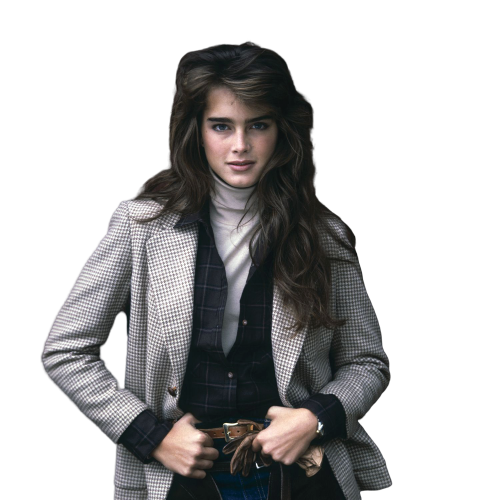
1980
The 1980s were a decade of bold style, colors, and silhouettes-permed hair included. With trends spanning from ripped tights and leather to polished oversized blazers, and style icons ranging from Joan Jett to Joan Collins, it was one of the most eclectic decades in fashion. And like it or not: the '80s are back in full force. From shoulder pads to power suits and all that's in-between, some of the era's key looks are making a comeback in fashion.☰ Page Editor